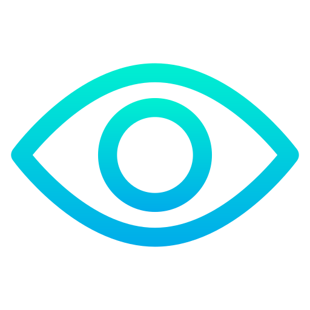
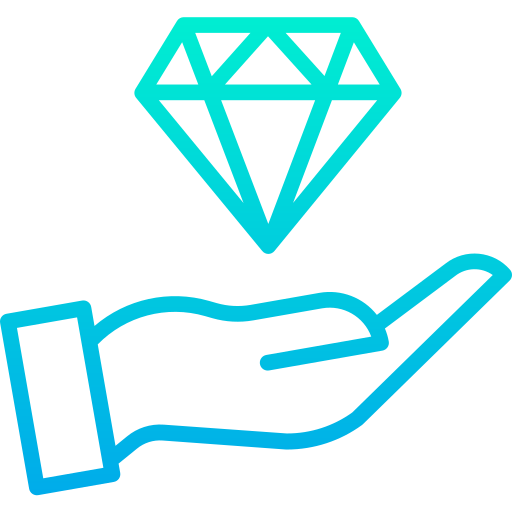

A missão desse projeto é oferecer aos entusiastas de teclados mecânicos um espaço completo para descobrir, aprender e compartilhar experiências, ajudando cada usuário a encontrar conforto, performance e prazer na digitação, com base em dados coletados que a comunidade está buscando.

Minha visão para esse site é ser referência global para todos que buscam conhecimento, customização e paixão pelo universo dos teclados, promovendo um estilo de vida mais ergonômico, criativo e conectado. Ou seja, atendendo as necessidas de quem busca por um teclado, agregando valor ao produto

Paixão pelo detalhe: Cada tecla, switch e layout merece atenção.
Qualidade e confiança: Informação confiável e produtos de qualidade.
Criatividade e personalização: Cada usuário é único e seu teclado também deve ser.
Bem-estar e ergonomia: Valorizamos saúde, conforto e experiência de digitação.

Meu nome é Vinícius Yudi Okamoto, um estudante de Análise de Desenvolvimento de Sistemas, formado em Design e pós graduado em administração de empresa. Sou uma pessoa movida pela curiosidade e pela busca constante por aprimoramento técnico, com forte interesse em desenvolvimento de software. Tenho facilidade em aprender de forma prática, analisando problemas reais e explorando conceitos até compreendê-los de maneira sólida. No meu dia a dia de estudos e projetos, trabalho frequentemente com HTML, CSS, JavaScript e MySQL, dedicando atenção a boas práticas, organização e entendimento detalhado de cada tecnologia. Além disso, mantenho um compromisso consistente com qualidade acadêmica e profissional, buscando sempre entregar resultados claros, funcionais e bem estruturados. Fora do código, também sou um entusiasta por teclados mecânicos e layouts, apreciando a parte técnica e personalizada desse universo, o que demonstra meu interesse por tecnologia tanto no software quanto no hardware.